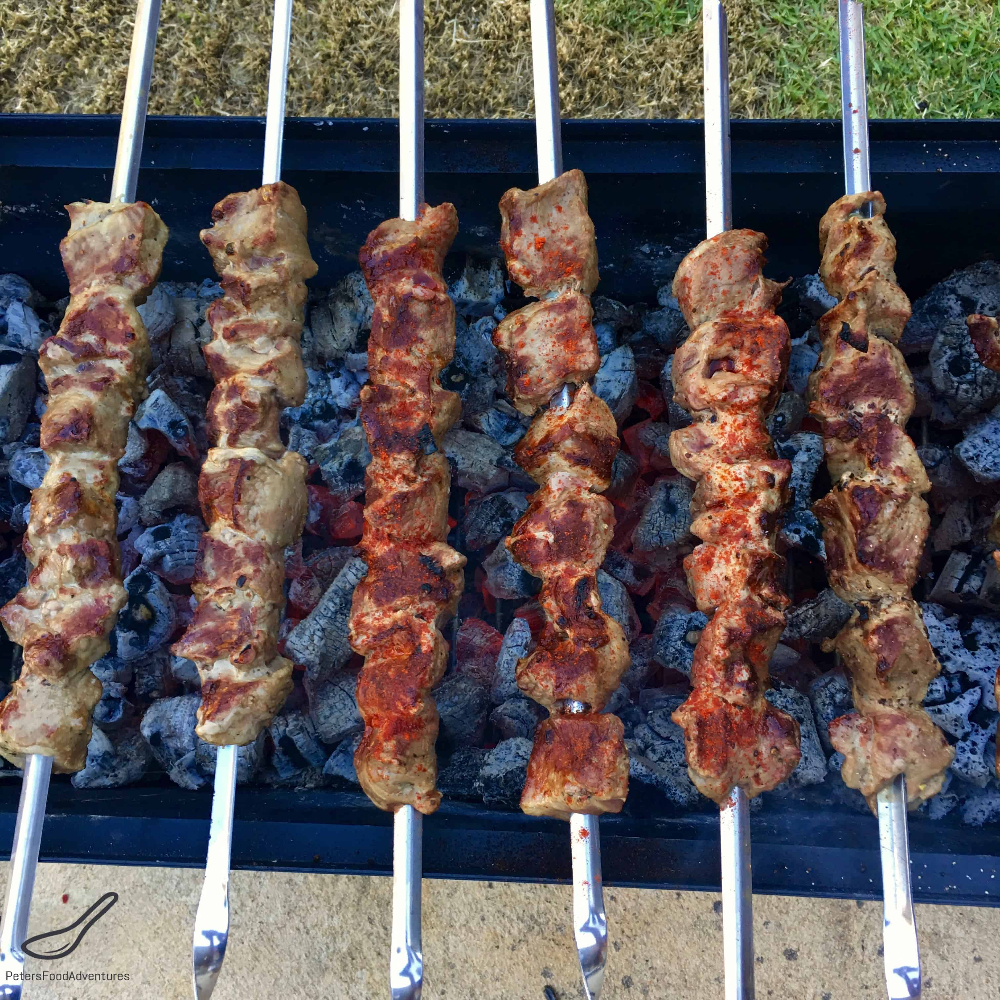

Shashlik

Lamb Kabobs
Shashlik, is a dish of marinated, skewered and grilled cubes of lamb, similar to shish kabob.
It is known traditionally by various other names in the Caucuses, and from the 19th century became
popular as shashlik across much of Russia.
Ingerdients
- 1 lbs Cubed Lamb
- 1 Onion Sliced
- 5 tablespoons Red Wine Vinegar
- 3 minced Garlic Cloves
- ½ teaspoon ground Corriander
- ½ bunch chopped Parsely
- ½ teaspoon Kosher Salt
- ½ teaspoon ground Black Pepper
- ¼ cup Vegetable Oil
Steps
- Mix all the ingredients in a glass bowl. Cover and marinate in the refrigerator for a few hours and up to 24 hours.
- Drain the meat and pat dry with paper towels. Discard marinade and onion.
- Divide the meat evenly among 4 skewers and grill on BBQ (preferably charcoal) for about 15 minutes, turning them occasionally.
- Arrange the skewers on a platter and serve immediately.
- The meat is traditionally removed from the skewers by wrapping hot flatbread around them and sliding it. The skewers are served with various salads.